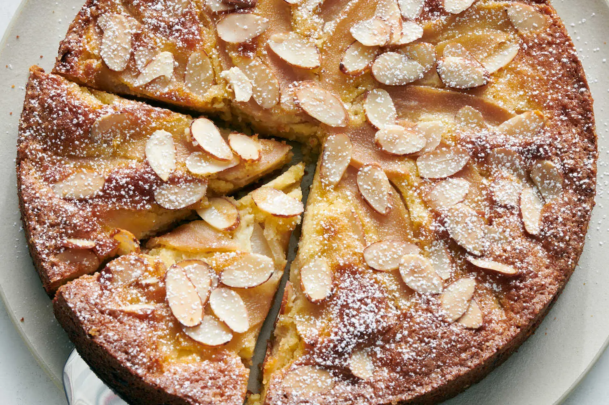

Pear-Almond Cake
By David Tanis | Published February 12, 2025

Photo: David Malosh for The New York Times | Food Stylist: Simon Andrews.
Description
This simple cake comes together with little fuss: It’s just sliced pears baked in an easy almond flour batter, but in flavor and texture, it’s so much more. Feel free to make it early in the day, or even the day before serving. It keeps well. Use firm, slightly underripe pears if possible.
Ingredients
Yield: 8 servings
- 8 tablespoons/113 grams melted unsalted butter, plus more for the pan
- 4 large eggs, beaten until lightly foamy
- ½ teaspoon vanilla extract
- ½ teaspoon almond extract
- 2 cups/180 grams almond flour
- 1 cup/200 grams granulated sugar, plus about 2 tablespoons more for sprinkling
- ¼ teaspoon kosher salt (such as Diamond Crystal)
- ½ teaspoon baking powder
- 2 large firm-ripe pears, peeled, in ¼-inch slices
- ¼ cup/25 grams sliced almonds
- Powdered sugar, for dusting
Steps
- Heat oven to 375 degrees. Generously butter a springform cake pan.
- In a mixing bowl, whisk together eggs, melted butter, vanilla extract and almond extract. In a separate bowl, whisk together almond flour, granulated sugar, salt and baking powder. Combine both mixtures, beating briefly, until smooth.
- Pour batter into the prepared pan and smooth with a spatula. Arrange pear slices over the top in a random pattern. Sprinkle about 2 tablespoons granulated sugar over pears, then scatter sliced almonds lightly over the surface. Place the dish on a baking sheet./li>
- Bake for about 1 hour, or until nicely browned on top and an inserted cake tester emerges clean. Cool until you can handle the pan. Remove springform, using a butter knife to help release the cake, and let cool completely. (The cake will taste better after several hours and up to 1 day.)
- Dust cake very lightly with powdered sugar. Cut wedges and serve directly from the base of the springform (or straight from the pie pan).
© The New York Times Company. All rights reserved.
Home